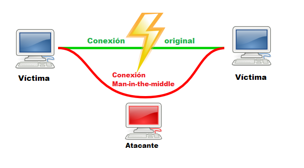

|
Introducción: Hoy en día casi todo el mundo poseemos un móvil o un ordenador. Cuando nos encontramos en nuestro hogar, tenemos la tranquilidad de nuestro acceso wifi seguro, pero cuando andamos de aquí para allá y queremos ahorrar datos, a veces nos surge la tentación de conectarnos a redes abiertas en la calle o centros comerciales. Este es un craso error, porque no sabemos quién ha creado ese acceso o quién esta espiando su tráfico de red. A continuación, vas a comprobar porqué solo debes conectarte a redes seguras. Hay una bandera escondida en algún lugar y debes encontrarla. Tienes pensar que en vez de una bandera, podrían ser datos personales o económicos, e incluso datos por los que puedan llegar a extorsionarte.  Escenario: En casa nos aburrimos, acudimos a un centro comercial a dar un paseillo, después de varias vueltas, observamos que el lugar esta lleno, y como somos gente curiosa, cogemos nuestro dispositivo y buscamos redes, cómo no, observamos una red abierta sin contraseña y accedemos a ella. Objetivo: Comprueba tu mismo, si es verdad que se pueden obtener datos de una red desconocida:
Disfruta del reto y recuerda que es educativo. Sólo se intenta dejar ver los peligros a los que estamos sometidos hoy en día con nuestros dispositivos conectados a internet. Descarga la máquina desde el siguiente enlace : Mega |